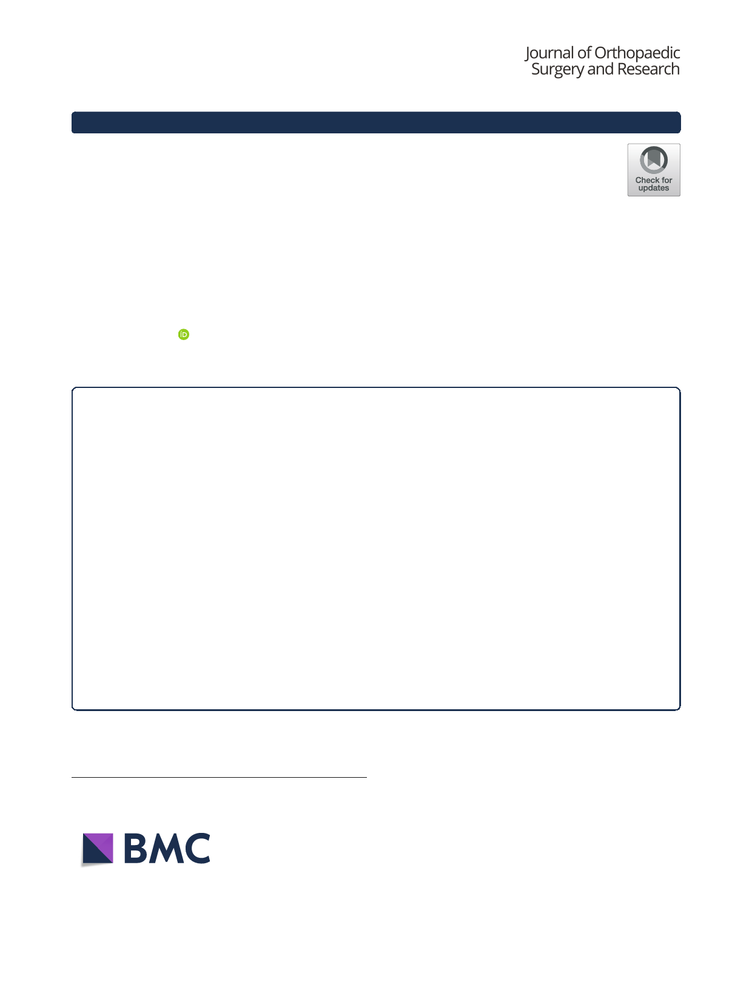

Sandbakken et al. Journal of Orthopaedic Surgery and Research
https://doi.org/10.1186/s13018-020-02052-3
(2020) 15:522
RESEARCH ARTICLE
Open Access
Highly variable effect of sonication to
dislodge biofilm-embedded Staphylococcus
epidermidis directly quantified by
epifluorescence microscopy: an in vitro
model study
Erik T. Sandbakken1* , Eivind Witsø1, Bjørnar Sporsheim2, Kjartan W. Egeberg2, Olav A. Foss3, Linh Hoang2,
Geir Bjerkan1, Kirsti Løseth4 and Kåre Bergh4,5
Abstract
Background: In cases of prosthetic joint infections, culture of sonication fluid can supplement culture of harvested
tissue samples for correct microbial diagnosis. However, discrepant results regarding the increased sensitivity of
sonication have been reported in several studies. To what degree bacteria embedded in biofilm are dislodged
during the sonication process has to our knowledge not been fully elucidated. In the present in vitro study, we
have evaluated the effect of sonication as a method to dislodge biofilm by quantitative microscopy.
Methods: We used a standard biofilm method to cover small steel plates with biofilm forming Staphylococcus
epidermidis ATCC 35984 and carried out the sonication procedure according to clinical practice. By comparing area
covered with biofilm before and after sonication with epifluorescence microscopy, the effect of sonication on
biofilm removal was quantified. Two series of experiments were made, one with 24-h biofilm formation and
another with 72-h biofilm formation.
Confocal laser scanning microscopy (CLSM) and scanning electron microscopy (SEM) were used to confirm whether
bacteria were present after sonication. In addition, quantitative bacteriology of sonication fluid was performed.
Results: Epifluorescence microscopy enabled visualization of biofilm before and after sonication. CLSM and SEM
confirmed coccoid cells on the surface after sonication. Biofilm was dislodged in a highly variable manner.
Conclusion: There is an unexpected high variation seen in the ability of sonication to dislodge biofilm-embedded
S. epidermidis in this in vitro model.
Keywords: Sonication, Biofilm formation, Staphylococcus epidermidis, Fluorescence microscopy, Confocal
microscopy, Electron microscopy
1Department of Orthopedic surgery, St Olav’s University Hospital, Trondheim,
Norway
Full list of author information is available at the end of the article
© The Author(s). 2020 Open Access This article is licensed under a Creative Commons Attribution 4.0 International License,
which permits use, sharing, adaptation, distribution and reproduction in any medium or format, as long as you give
appropriate credit to the original author(s) and the source, provide a link to the Creative Commons licence, and indicate if
changes were made. The images or other third party material in this article are included in the article's Creative Commons
licence, unless indicated otherwise in a credit line to the material. If material is not included in the article's Creative Commons
licence and your intended use is not permitted by statutory regulation or exceeds the permitted use, you will need to obtain
The Creative Commons Public Domain Dedication waiver (http://creativecommons.org/publicdomain/zero/1.0/) applies to the
data made available in this article, unless otherwise stated in a credit line to the data.